Wavelet filter
The wavelet transform is commonly used in modern signal-processing applications. This type of wavelet filter applies the à trous algorithm [2, 1] which is an undecimated scheme in which the filter responses are up-sampled, thereby inserting holes (trous in French) between the filter coefficients. The output of each filter level therefore contains the same number of samples as the input.
The first step is based on separable convolution to obtain the smoothed approximations
| 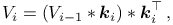 | (1) |
where 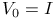 is the input image, 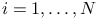, and 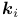
is a filter kernel at the corresponding level. The number of levels
is given by 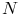. The convolution kernel is usually based on a third-order
B-spline scaling function [2, 1], where 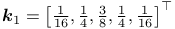,
 ,
,
etc.
,
,
etc.
The wavelet transform of the input data at level 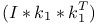 is computed as the difference between two consecutive approximation levels
| 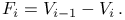 | (2) |
Here, each wavelet level corresponds to different ranges of spatial frequencies. The first level 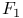 contains mainly the high spatial frequencies present in the input image including noise. Higher levels contain ranges of lower and lower image frequency components.
In our implementation, the output of the wavelet filter is the second wavelet level 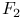 (optionally the third, 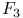), because at this level, most localization microscopy data contains structures with sizes close to the diffraction limit of the microscope (we note that this depends on the effective camera pixel size). The wavelet filter is the default option in ThunderSTORM as it performs very well on many of the localization microscopy data sets we have experimented with.
Detector threshold formula
Refer to Threshold to see how filter results can be used to dynamically find threshold value.
This filter provides the two default variables and all the calculated wavelet levels 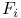:
| Wave.I | current unfiltered image |
|---|---|
| Wave.F | current filtered image |
| Wave.F1 | first wavelet level of the current image |
| Wave.F2 | second wavelet level of the current image |
| Wave.F3 | third wavelet level of the current image |
References
- [1] (2012) Wavelet analysis for single molecule localization microscopy, Optics Express 20 (3), pp. 2081–95. External Links: Document. Cited by: Wavelet filter, Wavelet filter.
- [2] (2002) Astronomical Image and Data Analysis, Springer-Verlag. Cited by: Wavelet filter, Wavelet filter.
![[LOGO]]()